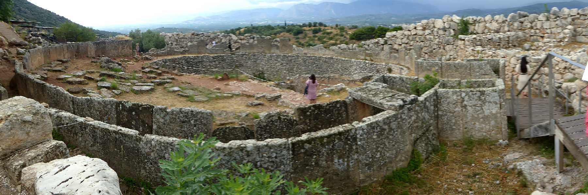
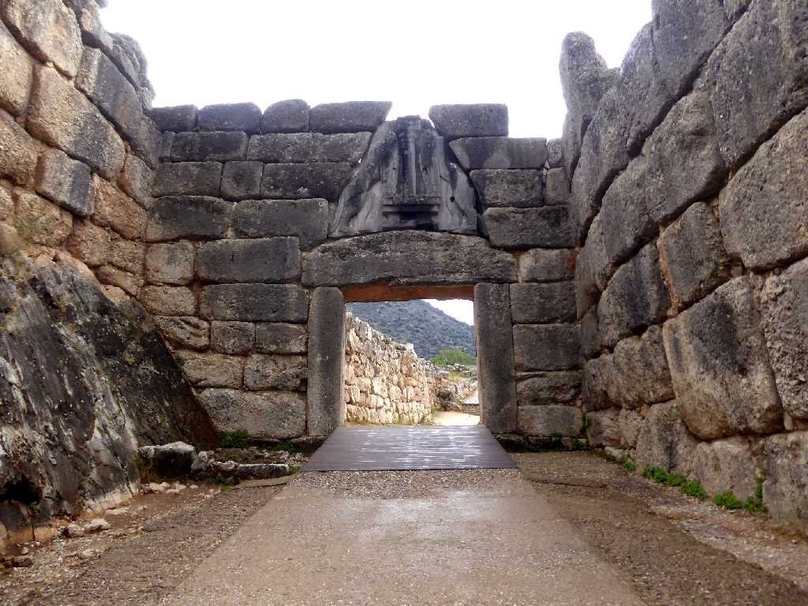
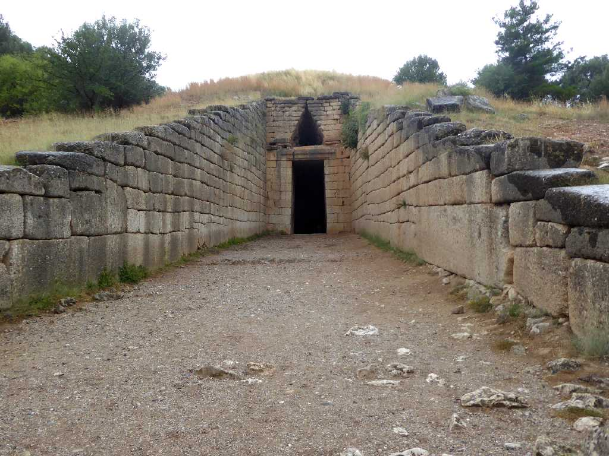
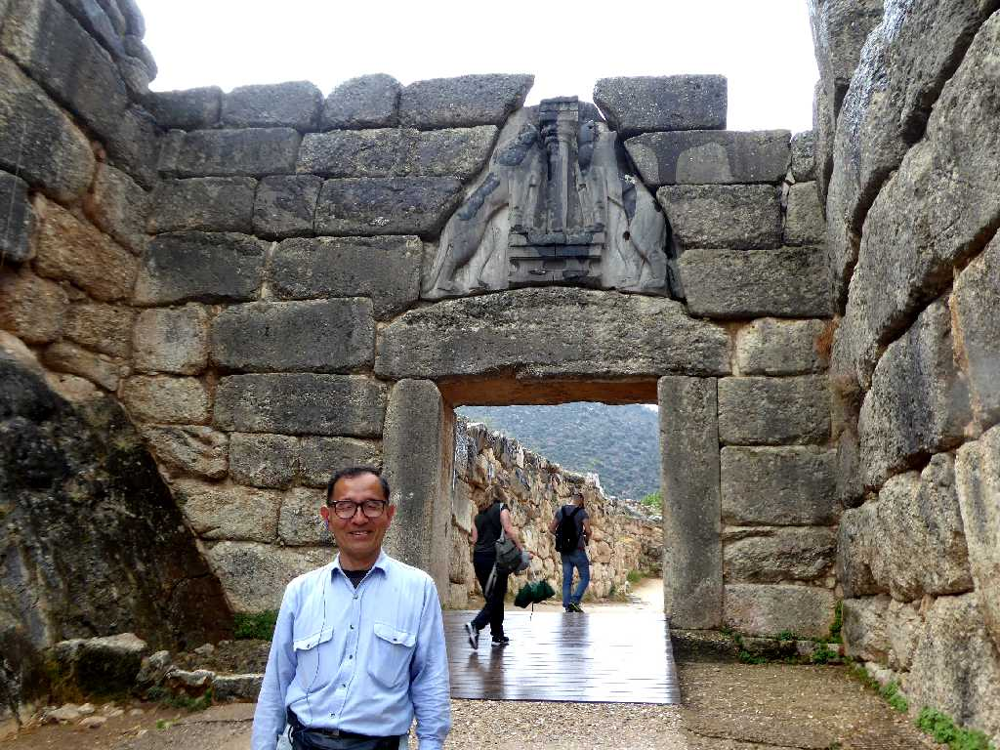

Mycenae
紀元前１６００年頃から紀元前１２００年頃まで栄えたミケーネ文明の遺跡群

Lion Gate Mycenae
紀元前１３世紀頃に創られたと考えられている城塞に入るメインゲートで上部の石材は２０ｔあり重力分散のため三角形になっている

Treasury of Atreus Mycenae
ミケーネのアトレウスの宝庫
Mask of Agamemnon National Archaeological Museum of Athens
ハインリヒシュリーマンにより発見された葬儀に用いられたアガメムノンのマスク

Lady of Mycenae National Archaeological Museum of Athens

June 17 2018 Mycenae